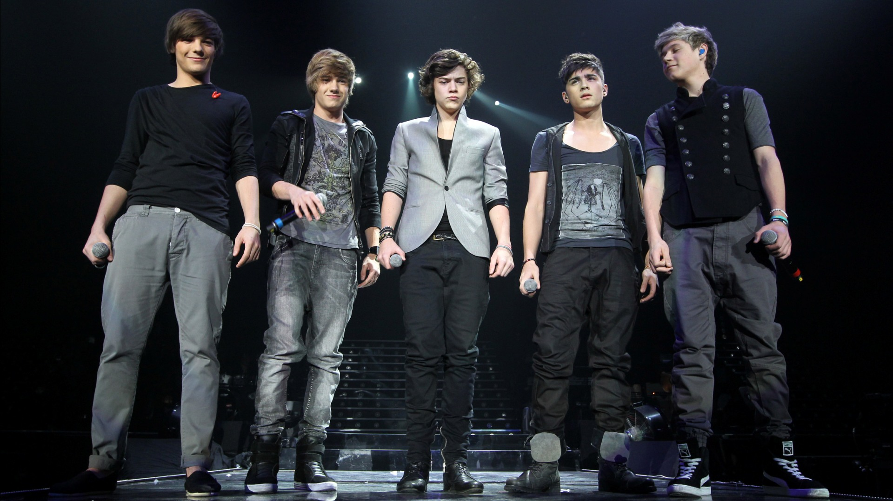

One Direction (abreviado frecuentemente como 1D) es una boy band británico-irlandesa formada en 2010 en Londres (Reino Unido), con motivo del programa The X Factor. Durante la transmisión del concurso, el quinteto, compuesto en aquel entonces por Harry Styles, Liam Payne, Zayn Malik, Niall Horan y Louis Tomlinson, fue apadrinado por Simon Cowell. Su formación se dio luego de que los cinco integrantes hicieran sus audiciones y fueran expulsados de la competencia. Tras esto, Nicole Scherzinger, una de las juezas, sugirió que los cinco formasen parte de un grupo, al que finalmente llamaron One Direction. El grupo finalmente quedó en el tercer lugar del concurso, pero aun así Cowell pagó un contrato discográfico con Syco Music para que pudiesen lanzar un disco.
En el segundo semestre del 2011, lanzaron su primer sencillo, «What Makes You Beautiful», que logró debutar en el número uno de las principales listas del Reino Unido e Irlanda. Por esto, recibieron varios reconocimientos, como un Brit al mejor sencillo británico y tres MTV Video Music Awards al mejor artista nuevo, mejor vídeo pop y vídeo más digno de compartir. Su álbum debut, Up All Night, logró debutar en la posición número uno del Billboard 200 y convirtió a One Direction en el primer grupo británico que alcanza el número uno con su primer disco en la historia de la lista. Para promocionar Up All Night, One Direction se embarcó en el Up All Night Tour, con el que dieron distintos conciertos en Europa, Oceanía y América. En el 2012, su éxito se mantuvo con el lanzamiento de Take Me Home, su segundo álbum. Al igual que su predecesor, debutó en el primer puesto del Billboard 200 e hizo a One Direction el primer grupo masculino y segundo en general que logra alcanzar dicho puesto con sus dos primeros discos, detrás de Danity Kane.También logró el número uno en el Reino Unido, por lo que es su primer disco que lo logra. El primer sencillo, «Live While We're Young», tuvo una recepción comercial superior a la de «What Makes You Beautiful», ya que se ubicó entre los diez más vendidos en la mayoría de las listas musicales, más concretamente, en Nueva Zelanda se convirtió en el primer número uno del quinteto.
Más tarde, en 2013, lanzaron su tercer álbum Midnight Memories, el cual se convirtió en el más vendido de ese año, con casi cinco millones de unidades vendidas. De este disco, fueron seleccionados los sencillos «Best Song Ever», «Story of My Life», «Midnight Memories» y «You and I», los cuales entraron a varios conteos de todo el mundo. La gira correspondiente del disco, Where We Are Tour, se convirtió en una de las más exitosas de la historia, con una recaudación de casi 300 millones de dólares y una asistencia de tres millones y medio de personas. Su cuarto álbum, Four, incluyó los sencillos «Steal My Girl» y «Night Changes». En marzo de 2015, en plena gira, Zayn Malik anunció su marcha de One Direction, mientras el resto del grupo seguiría adelante con la gira y la grabación de su quinto álbum.
El 25 de marzo de 2015 la banda anunció la salida de Malik del grupo. Ellos mismos admitieron que estuvieron enfadados por la decisión de Malik. El 14 de mayo el grupo hizo su primera aparición pública en The Late Late Show with James Corden, donde confirmaron que continuarían trabajando sin un quinto miembro. Desde que Malik abandonó la banda, tuvo éxito sacando a la venta su debut como sencillo Pillowtalk y el álbum Mind of Mine.
